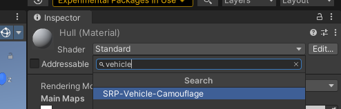
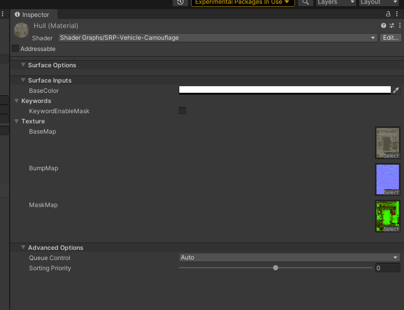
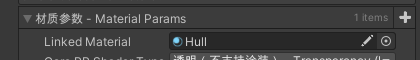
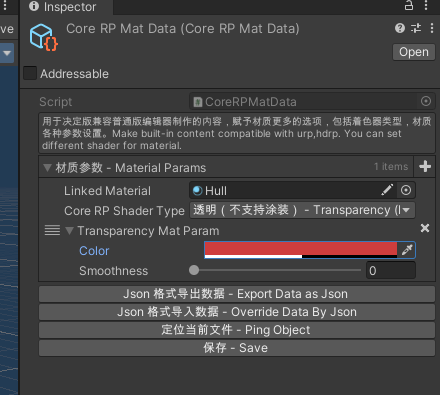
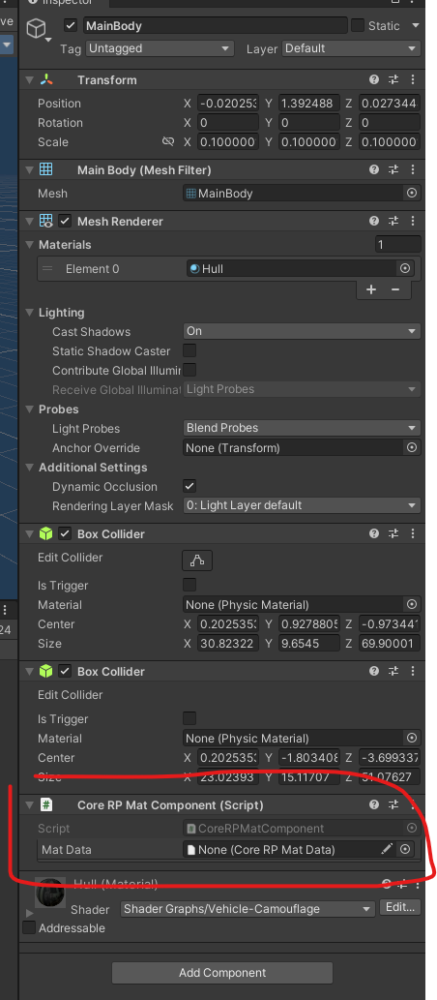
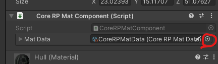

02.4 Material Component 材质组件
For now,you need to upgrade your editor to 2021 version to use this new feature.
目前而言，你需要将你的模组工具升级到 2021 才可以使用此功能
15.Upgrade 2021 Editor 升级 2021 编辑器
General 综述
The game has three version of renderer pipline. To make it possible to build once and run on all version. We need some components to fix material problems.
游戏拥有三种渲染管线版本，为了实现一次打包三个管线正常渲染，我们需要一些中间组件，来帮助我们解决材质兼容的问题。
通用PBR 材质 Shader
支持 Mask Texture 的材质球
切换 Shader 为 SRP-Vehicle-Camouflage


A mask for PBR effect. You can refer channel from https://docs.unity3d.com/Packages/com.unity.render-pipelines.high-definition@7.1/manual/Mask-Map-and-Detail-Map.html
一个反光遮罩贴图用于 PBR 效果。贴图通道信息查看 https://docs.unity3d.com/Packages/com.unity.render-pipelines.high-definition@7.1/manual/Mask-Map-and-Detail-Map.html
Render component 渲染组件
Core RP MatData
Right click the project and select the menu in the picture.
右键工程，选择如菜单的按钮。

Linked Material 链接的材质
Select the material you want to override. 选择你要覆盖的材质

Transparency 透明贴图
Change the alpha of color to make material transparent.
改变颜色的 Alpha 值，实现透明效果。

Add Core RP Mat Component on your mesh renderer.
在你的 mesh renderer 组件上挂载 Core RP Mat 组件。

Select the CoreRPMatData you created previously. You need to make the linked material on CoreRPMatData is one of the mesh renderer that contains the same material.
选择你先前创建的 CoreRPMatData。你需要保证你添加的 linked material 是其节点下某个 Mesh Renderer 所拥有的材质球。
